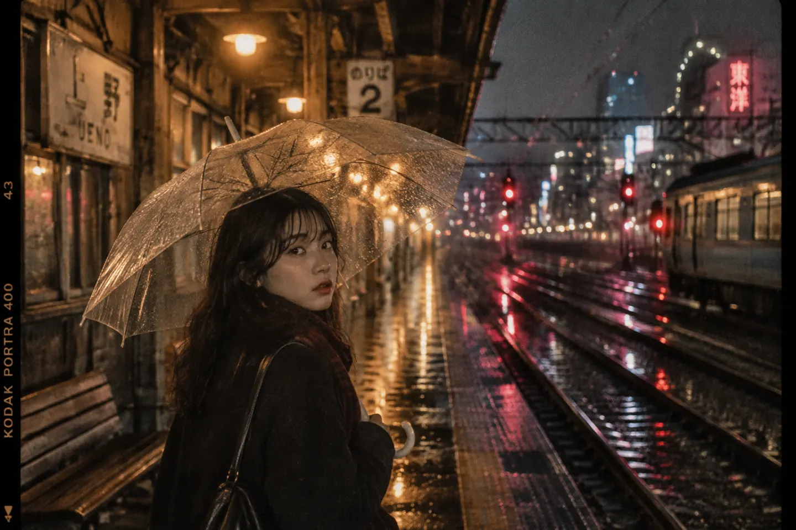

EP 01
第 1 集 · 雨停站台
5 / 5 全部完成 · 生成、审阅和交付在 MuWeave 完成
这一集没有待办
上周五完成

雨夜重逢 · 3 集 系统正常创作 · 剧集制作
3 集，2 集在等你。剧本在 Auctra，分镜在 Scaena，合成在 MuWeave —— 这里只告诉下一步。
5 / 5 全部完成 · 生成、审阅和交付在 MuWeave 完成
这一集没有待办
 EP 02
EP 02
3 / 5 创意分镜等你审阅
下一步：审阅 6 个分镜，过了就能进制作
 EP 03
EP 03
4 / 5 制作交接 · 4 个正在生成
下一步：确认 2 个镜头，重试 1 个失败